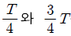
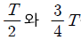
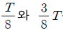
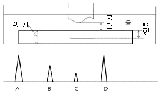
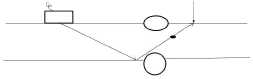
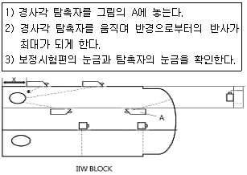

초음파비파괴검사산업기사 (2014-03-02 기출문제)
1과목: 비파괴검사 개론
1. 각종 비파괴검사법에 관한 설명 중 옳은 것은?
- 와류탐상검사는 비접촉, 고속탐상, 자동탐상이 가능하고 내부결함의 검출도 우수하다.
- 음향방출검사는 미시균열의 성장유무, 회전체 이상진단 등의 모니터링화가 가능하다.
- 침투탐상검사는 금속, 비금속 등 모든 재료의 적용에 가능하나, 제품의 크기, 형상 등에 제한을 받는다.
- 자분탐상검사는 강자성체에만 적용이 가능하며, 내부 결함 검출도 우수하다.
(정답률: 78%)

2. 압전효과(piezoelectric effect)를 이용하여 불연속을 검출할 수 있는 비파괴검사법은?
- 방사선투과검사
- 자분탐상검사
- 와전류탐상검사
- 초음파탐상검사
(정답률: 91%)
3. 침투탐상시험 방법 중 검출감도가 가장 우수한 시험방법은?
- 용제제거성 염색침투탐상시험
- 후유화성 염색침투탐상시험
- 용제제거성 형광침투탐상시험
- 후유화성 형광침투탐상시험
(정답률: 86%)
4. 시험 재료의 두께 차 또는 주변 재질에 대한 밀도 차이로 재료의 내부 상태를 알아보는 비파괴검사법은?
- 침투탐상검사
- 방사선투과검사
- 와전류탐상검사
- 자분탐상검사
(정답률: 84%)
5. 와전류탐상시험에 대한 설명으로 틀린 것은?
- 전도성 시험체 내부에 발생한 유도전류를 이용한다.
- 와전류 분포의 변화를 시험코일의 임피던스 변화로 결함을 찾아낸다.
- 와전튜 탐상검사는 강자성체나 비자성체인 전도체에 적용할 수 있다.
- 시험체 표면과 시험코일과의 거리 변화를 이용하여 결함의 형상 및 크기를 알 수 있다.
(정답률: 63%)
6. 경금속과 중금속의 비중을 구분하는 것으로 옳은 것?
- 약 1
- 약 2
- 약 5
- 약 8
(정답률: 73%)
7. 입자분산강화 재료와 섬유강화재료의 성질을 비교, 설명한 것으로 옳은 것은?
- 섬유강화재료의 강화는 섬유의 양계체적비와 무관하다.
- 분산강화재료의 강도는 입자의 체적비가 클수록 증가하며 20vol%까지가 한계이다.
- 분산강화재료의 강도는 입자간 거리에 비례하고 입자직경에는 거의 영향을 받지 않는다.
- 섬유강화재료는 섬유의 방향에 따라 이방성은 매우 크지만 가공성은 분산강화재료보다 양호하다.
(정답률: 50%)
8. 수소저장합급에 대한 설명으로 틀린 것은?
- 수소가스와 반응하여 금속수소화물이 된다.
- 수소의 흡장/방출을 되풀이하는 재료는 분화하게 된다.
- 합금이 수소를 흡장할 때는 팽창하고, 방출할 때는 수축한다.
- 수소가 방출되면 금속수소화물은 원래의 수소저장합금으로 되돌아가지 않는다.
(정답률: 82%)
9. 마그네슘합금을 용해할 때의 유의사항에 대한 설명으로 틀린것은?
- 수소를 흡수하기 쉬우므로 탈가스처리를 해야 한다.
- 주조조직을 미세화하기 위하여 용탕온도를 적절하게 관리한다.
- 규사 등이 환원되어 Si의 불순물이 많아지므로 불순물이 적어지도록 관리한다.
- 고온에서 산화하기 쉽고, 승온하면 연소하므로 탄소분말을 뿌려 CO2가스를 발생시켜 산화를 방지한다.
(정답률: 68%)
10. 용질 원자가 침입 혹은 치환형태로 고용되어 격자의 왜곡이 발생할 때 생기는 현상이 아닌 것은?
- 전기저항이 증가한다.
- 합금의 강도, 경도가 커진다.
- 소성변형에 대한 저항이 크다.
- 전도전자가 산란되어 이동을 쉽게 한다.
(정답률: 71%)
11. 고로에서 출선한 용선에 공기를 불어 넣어 함유된 탄소와 규소 등 그 밖의 불순물을 산화 제거하여 강을 만드는 방법은?
- 전로 제강법
- 평로 제강법
- 전기로 제강법
- 도가니로 제강법
(정답률: 57%)
12. Ni-Cu 계 합금으로 전기저항이 높아 전열선 등의 전기저항 재료로 사용되는 것은?
- 엘린바(elinvar)
- 콘스탄탄(constantan)
- 문쯔메탈(Muntz metal)
- 퍼멀로이(permalloy)
(정답률: 61%)
13. 특수용도용 합금강에서 일반적으로 전자기적 특성을 개선하는 원소는?
- Ni
- Mo
- Si
- Cr
(정답률: 66%)
14. 0.3%C 탄소강을 860℃에서 서냉하였을 때 펄라이트가 20% 이었다면, 펄라이트 중의 FeC 함량(%)은?
- 2.4%
- 4.5%
- 6.8%
- 8.5%
(정답률: 73%)
15. 우수한 제진기능(흑연의 진동에너지 흡수) 때문에 공작기계의 배드(bed)로 가장 많이 사용되고 있는 것은?
- 탄소강
- 베어링강
- 회주철
- 고속도공구강
(정답률: 75%)
16. 연강용 피복아크 용접봉 길이의 일반적인 허용오차는 얼마정도인가?
- ±3mm
- ±5mm
- ±7mm
- ±9mm
(정답률: 80%)
17. 아크 용접시 가는 케이블을 사용할 때 발생하는 현상은?
- 저항이 적다.
- 전류가 정상이다.
- 아크가 안정하다.
- 발열 한다.
(정답률: 80%)
18. 용접전류200A, 아크 전합 25V, 용접속도가 150m/min일 때 용접입열은 얼마인가?(오류 신고가 접수된 문제입니다. 반드시 정답과 해설을 확인하시기 바랍니다.)
- 2000J/cm
- 2000cal/cm
- 20000J/cm
- 20000cal/cm
(정답률: 62%)
19. 서브머지드 아크용접(SAW)에서 용접전류와 속도가 일정할 때, 아크전압이 높아짐에 따라 나타나는 현상이 아닌 것은?
- 플럭스 소모가 많아진다.
- 크랙 감수성이 증가한다.
- 가공 발생이 증가된다.
- 언더컷 발생 우려가 있다.
(정답률: 47%)
20. 용접부에 발생하는 인장 및 압축 잔류응력이 용접 구조물에 미치는 영향에 관한 설명 중 인장 잔류응력의 영향이 아닌 것은?
- 피로강도의 저하를 가져온다.
- 좌굴현상을 발생하게 한다.
- 파괴전파를 용이하게 한다.
- 응력부식 현상을 촉진한다.
(정답률: 64%)
2과목: 초음파탐상검사 원리 및 규격
21. 다음 중 초음파탐상시험에서 분해능이란?
- 불연속의 크기를 결정하는 능력
- 반사체에서 생긴 에코를 증폭하는 능력
- 인접한 두 개 이상의 반사체에 의해 생기는 에코를 분리할 수 있는 능력.
- 아주 두꺼운 시험편의 중심에 있는 불연속을 검출할 수 있는 능력
(정답률: 83%)
22. 초음파탐상기 CRT상에 나타난 지시를 이동시켜 송신펄스가 CRT화면 원점과 동일지점에 오도록 조정하는 것을 무엇이라 하는가?
- 리젝션(rejection)
- 스윕지연(sweep delay)
- 필터(fillter)
- 스윕길이(sweep length)
(정답률: 63%)
23. 매질 내에서 입자의 운동이 파의 진행방향과 평행일 때, 송신되는 파를 무엇이라 하는가?
- 종파
- 횡파
- 판파
- 표면파
(정답률: 74%)
24. 초음파탐상기를 이용하여 두께측정을 할 때 초기조정에 필요한 것이 아닌 것은?
- 영점 조정
- 시간축 조정
- 게인 조정
- 펄스폭 조정
(정답률: 60%)
25. 음향 임피던스가 서로 다른 두 매질에 초음파가 통과할 때, 그 경계면에서 굴절각을 계산하는데 쓰이는 법칙은?
- 프아송의 법칙
- 스넬의 법칙
- 샤를의 법칙
- 맥스웰의 법칙
(정답률: 82%)
26. 음향 이방성이 있는 재료를 초음파탐상할 때의 설명으로 틀린 것은?
- 강재 중에서 초음파의 음속이나 감쇠 등의 초음파전파특성이 탐상방향에 따라 다른 재료를 음향 이방성을 갖는 재료라 부른다.
- 압연강판과 같이 주 압연방향(L방향)과 이것에 직각인 방향(C방향) 사이에 초음파 전파특성이 현저히 다른 재료에는 음향 이방성에 대한 점검이 필요하다.
- 음향 이방성을 갖는 재료의 탐상에는 공칭굴절각이 70°인 탐촉자를 사용한다.
- 음속비의 측정에 의해 음향 이방성을 점검할 경우 음속비가 1.02를 넘을 때 음향 이방성이 있는 것으로 간주한다.
(정답률: 72%)
27. 음파의 세기 감소에 결정적으로 영향을 미치는 인자들로 조합된 것은?
- 산란, 흡수, 분산
- 굴절, 흡수, 회절
- 굴절, 반사, 산란
- 흡수, 굴절 반사
(정답률: 73%)
28. 초음파탐상시험 중 수직탐상에 대한 설명이 옳은 것은?
- 동일 결함으로부터의 에코가 CRT상에 나타나는 위치는 파장의 장단에 관계한다.
- 결함 에코의 상승위치로부터 결함크기를 알 수 있다.
- 저면에 의한 다중반사 도형으로부터 시험체의 밀도를 알 수 있다.
- 결함이 없으면 CRT상에는 저면 에코만이 나타난다.
(정답률: 68%)
29. 초음파탐상검사에서 검사 감도에 관한 설명으로 옳은 것은?
- 탐촉자, 펄스발생기 및 증폭기에 영향을 받는다.
- 기계적인 흡음 및 탐촉자 등과는 관계가 없다.
- 분쇄능이 증가할수록 감도는 증가한다.
- 주파수가 증가할수록 감도는 감소한다.
(정답률: 59%)
30. 인공대비 반사원으로 주로 노치(notch)를 사용하는 경우는?
- 횡파의 거리 진폭교정을 위해서
- 면적- 증폭 교정을 위해서
- 판재의 두계를 교정하기 위해서
- 탐상면 근처의 분해능을 결정하기 위해서
(정답률: 55%)
31. 보일러 및 압력용기에 대한 표준초음파탐상검사(ASME Sec.V Art23-SA548)에서 알루미늄 합금판에 대한 검사 후 합격된 제품에는 어떤 글자의 도장을 찍는가?
- A
- P
- U
- O
(정답률: 56%)
32. 보일러 및 압력용기의 용접부에 대한 초음파탐상검사(ASME Sec.V.Art4)에 따른 수동탐상시험 주사 속도는 특별한 규정이 없는 경우 최고 약 몇 mm/s로 제한하고 있는가?
- 150
- 200
- 475
- 600
(정답률: 75%)
33. 보일러 및 압력용기에 대한 초음파탐상검사(ASME Sec.V.Art4)에서 결함의 비교평가를 위해 교정시험편을 사용하는데, 교정시험편에 포함되어 있는 반사체가 아닌 것은?
- 기공
- 노치
- 평저공
- 측면 드릴 구멍
(정답률: 61%)
34. 강용접부의 초음파탐상 시험방법(KS B0896)의 평판 이음용접부의 탐상방법에 따라 탐상할 수 있는 시험체가 아닌 것은?
- 두께가 20mm, 직경 2500mm인 강관의 원둘레 이음 용접부
- 두께가 15mm이고, 직경 2500mm인 강관의 길이이음용접부
- 각각의 두께가 20mm인 강판의 T이음 용접부
- 각각의 두께가 15mm인 강판의 각이음 용접부
(정답률: 49%)
35. 보일러 및 압력용기에 대한 초음파탐상검사(ASME Sec.V.Art4)에서 용접부의 두께가 25mm(즉, 1인치)일 때 기본 교정시험편의 구멍지름으로 옳은 것은?
- 2.4mm(3/32인치)
- 3.2mm(1/8인치)
- 4.8mm(3/16인치)
- 6.3mm(1/4인치)
(정답률: 67%)
36. 보일러 및 압력용기에 대한 초음파탐상검사(ASME Sec.V Art.4)에 따라 용접부를 수직탐상하는 경우, 수직 빔교정의 일반적인 절차를 위해 필요한 구멍의 크기는?

측구멍
측구멍
측구멍- 0.5스킵과 2스킵에서 최대 신호가 오는 구멍
(정답률: 68%)
37. 초음파탐상징치의 성능측정 방법(KS B ⑤34)에서 시간축 직선성 측정 방법에 대한 설명으로 옳지 않은 것은?(단, 제 1회 저면 에코를 B1, 제 2회 저면 에코를 B2,… 제6회 저면 에코를 B6라 한다.)
- B1부터 B6 에코까지 표시기에 표시되도록 시간축 조정기를 조정한다.
- B1와 B6 의 높이를 눈금의 100%가 되도록 게인 조정기를 조정하고 에코의 오름점을 시간축 눈금의 0과 50에 일치시킨다.
- B2의 높이를 눈금의 50%에 맞추면서 에코 오름점의 위치와 시간축 눈금의 편차를 최소 눈금의 1/5단위로 읽는다.
- 시간축 직선성 오차(%)는 읽은 최대 편차의 시간축 눈금 풀 스케일 값의 백분율을 구하여 정한다.
(정답률: 62%)
38. 알루미늄의 맞대기용접부의 초음파경사각탐상 시험방법(KSB 0897)에 따른 시험결과의 분류에서 모재의 두께가 40mm이고, 1류의 판정이 내려진 경우 허용되는 흠의 최대 길이는 얼마 이하인가? (단, 분류는 B종 흠인 경우이다.)
- 10mm
- 20mm
- 30mm
- 40mm
(정답률: 66%)
39. 알루미늄의 맞대기용접부의 초음파경사각탐상 시험방법(KSB 0897)에 따른 경사각탐상시험 방법에 대한 설명으로 옳은 것은?
- 공칭주파수는 5MHz, 시험주파수는 0.5~5MHz로 한다.
- 표준시험편은 시험체 또는 시험체와 특성이 비슷한 알루미늄으로 제작한 RB-A4 AL이다.
- 탐촉자의 선정에서 기본이 되는 탐상은 공칭굴절각 70°를 사용한다.
- 평가 대상으로 하는 흠의 구분은 에코 높이에 따라 1종, 2종, 3종으로 구분한다.
(정답률: 57%)
40. 보일러 및 압력용기에 대한 초음파탐상시험(ASME Sec.V.Art.4)에 의한 평가대상이 되는 지시는?
- DAC의 20%선 이상인 지시
- DAC의 25%선 이상인 지시
- DAC의 30%선 이상인 지시
- DAC의 35%선 이상인 지시
(정답률: 72%)
3과목: 초음파탐상검사 시험
41. 초음파 탐상검사시 탐촉자의 진동자 두께와 주파수와의 관계를 옳게 설명한 것은?
- 두께와는 전혀 무관하다.
- 얇을수록 높은 주파수를 발생한다.
- 두꺼울수록 높은 주파수를 발생한다.
- 종파는 두꺼울수록, 횡파는 얇을수록 높은 주파수를 발생한다.
(정답률: 72%)
42. 경사각 탐촉자의 입사점이나 굴절각을 측정하는 경우 탐상기의 감도는 에코의 높이가 몇 % 정도가 되도록 조정하면 좋은가?
- 10 ∼ 20% 정도
- 20 ∼ 50% 정도
- 50 80% 정도
- 100% 정도
(정답률: 41%)
43. 그림은 두께 4°의 알루미늄 시험편을 수침법으로 검사하는 것이다. 스크린에 나타난 지시치가 그림의 하단부와 같을 대지시 A가 나타내는 것은?

- 송신 펄스
- 제1전면 지시치
- 제1면 불연속지시
- 제1저면 반사지시
(정답률: 80%)
44. CRT상에 나타난 에코의 높이가 CRT 스크린 높이의 50% 일때 이득 손잡이를 조정하여 6dB를 낮추면 에코높이는 CRT 스크린 높이의 몇 % 로 낮아지는가?
- 5%
- 10%
- 25%
- 50%
(정답률: 81%)
45. 콘크리트나 목재와 같이 입자가 굵은 재료에 대한 초음파 시험을 위하여 송수신 탐촉자를 따로 사용하여 초음파의 감쇠나 음속을 측정하는 초음파 검사법의 종류는?
- 수침법
- 반사법
- 투과법
- 간접법
(정답률: 71%)
46. 다음 중 초음파 탐상검사에서 잔향 에코(ghost echo)가 나타날 수 있는 가능성이 가장 큰 경우는?
- 표면이 거친 시험체를 광대역 탐촉자로 시험하는 경우
- 송신부의 펄스전압을 최대로 하여 용접부를 탐상하는 경우
- 결정립이 조대한 시험체를 높은 주파수의 탐촉자로 시험하는 경우
- 초음파 감쇠가 적은 시험체를 높은 펄스반복주파수로 시험하는 경우
(정답률: 42%)
47. 용접부에 대한 경사각탐상시 음파가 표면 용접 덧붙임부에 그림과 같이 반사되어 결함처럼 보인다. 접촉매질이 묻은 손으로 반사되는 부분을 문지를 때 이 반사에코의 변화에 대하여 옳게 설명한 것은?

- 에코가 사라진다.
- 에코높이가 높아진다.
- 에코높이가 약간 낮아진다.
- 에코높이가 전혀 변화하지 않는다.
(정답률: 66%)
48. 초음파탐상검사시 CRT의 수평축에서 결함에코만을 나타내기 위해 설정하는 것은?
- DAC회로
- 리젝션
- 게인(gain)
- 게이트
(정답률: 62%)
49. 두께가 20mm인 강판에서 탐촉자 입사점으로부터 2스킵점까지의 거리(mm)는? (단, 탐촉자 굴적각은 45° 이다.)
- 80mm
- 60mm
- 40mm
- 20mm
(정답률: 73%)
50. 수직 탐상법에 대한 다음 설명 중 옳은 것은?
- 일반적으로 주파수가 낮은 경우 표면에 가까운 결함의 탐상에 유리하다.
- 초음파 감쇠가 큰 경우 낮은 주파수를 선택한다.
- 감쇠가 큰 경우 낮은 주파수 사용은 결함의 경사부에 큰 영향을 받는다.
- 탐상면이 거친 경우 높은 주파수 쪽이 시험기에 적합하다.
(정답률: 48%)
51. 강재의 밀도는 7.8g/cm3이고, 초음파 종파의 속도는 약 6000m/s 이다. 이 강재의 음향 임피던스는?
- 6.8x103kg/m2s
- 7.7x103kg/m2s
- 13.8x104kg/m2s
- 46.x106kg/m2s
(정답률: 67%)
52. 초음파탐상검사를 원리에 의해 분류할 때 이에 해당되지 않는 것은?
- 펄스반사법
- 투과법
- A 주사법
- 공진법
(정답률: 82%)
53. 지름이 작고 긴 봉강을 길이 방향에서 종파로 초음파 탐상검사할 때 1차 저면 반사파(B1)와 2차 저면 반사파(B2) 사이에 나타나는 간섭 파형은 무엇 때문에 일어나는가?
- 잡음
- 전기적 간섭 신호
- 표면파
- 파형변이
(정답률: 70%)
54. [그림]과 다음의 [절차]내용은 무엇에 대한 설명인가?

- 굴절각 측정
- 분해능 측정
- 거리진폭 교정
- 입사점 측정
(정답률: 56%)
55. 다음 중 결함의 크기 측정에 이용되는 방법이 아닌 것은?
- DAC 곡선
- 20dB법(20dB drop법)
- AVG곡선
- 게이트 활용 측정법
(정답률: 66%)
56. 초음파탐상검사에서 결함길이에 대한 설명으로 가장 옳은 것은?
- 결함 길이는 탐상면으로부터의 결함 깊이다.
- 결함 길이는 에코높이 구분선의 영역을 나타낸다.
- 결함 길이는 결함의 판두께 방향의 수직한 치수를 나타낸다.
- 결함 길이는 결함의 판두께에 평행한 방향의 치수를 나타낸다.
(정답률: 49%)
57. 탐촉자의 진동자 재질 중 물에 녹기 쉬워, 수침법 사용시 방수에 주의해야 하는 것은?
- 수정
- 지르콘티탄산납
- 황산리튬
- 니오브산리튬
(정답률: 70%)
58. 초음파빔의 거리에 관계없이 동일한 크기의 결함에 대해 동일 에코높이를 갖도록 전기적으로 보정하는 것은 무엇인가?
- 게이트 회로
- DAC 회로
- 리젝션
- 동기부(Timer회로)
(정답률: 68%)
59. 일반적으로 횡파를 이용한 초음파탐상은 주로 어떤 경우에 가장 많이 사용되는가?
- 용접부, 튜브 또는 배관의 결함을 검출하는데 사용
- 금속 재료의 탄성 이방성을 결정하는데 사용
- 두꺼운 판재의 면상 결함을 검출하는데 사용
- 얇은 판재의 두께를 측정하는데 사용
(정답률: 69%)
60. AVG선도 또는 DGS선도를 설명한 것으로 옳은 것은?
- 거리, 증폭, 두께를 나타낸다.
- 원거리음장에서만 측정하도록 되어있다.
- 횡축은 주파수를, 종축은 탐상거리를 나타낸다.
- 탐촉자의 주파수와 크기에 따라 별도의 DGS선도가 필요하다.
(정답률: 48%)